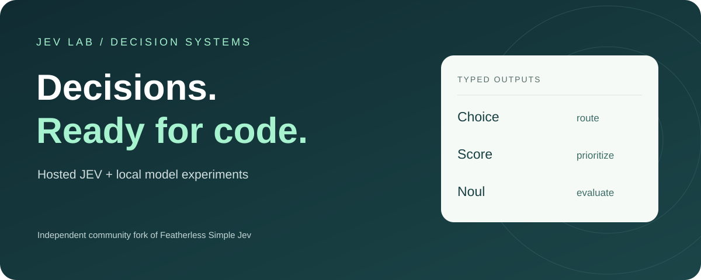

01 / HOSTED JEV
The TypeSafe model.
Use the official API with your account. Start with a mixed-question notebook and inspect every answer.
Connect JEV ↗ Based on
Based onJEV LAB. STRUCTURED DECISIONS.
Real JEV. Local experiments. One clear starting point.
Build with TypeSafe’s hosted JEV API, explore local model inference, and turn typed answers into application logic.
Independent community fork · based on Featherless Simple Jev

01 / HOSTED JEV
Use the official API with your account. Start with a mixed-question notebook and inspect every answer.
Connect JEV ↗02 / LOCAL SIMPLE JEV
Score allowed answer tokens with Hugging Face models. Explore prompts, inference and decision training.
Explore local inference ↗03 / EXPERIMENTS
Explore racing, walker supervision and classic control. See which decisions come from JEV and which come from code.
Open the notebooks ↗curl https://simple-jev-demo-api.featherless.ai/v1/classifier \
-H 'Content-Type: application/json' \
-d '{
"model": "featherless-ai/gemma-4-26B-A4B-classifier",
"state": "Mia owns a red bicycle.",
"questions": {
"color": {
"type": "choice",
"instructions": "What color is Mia’s bicycle?",
"criteria": {"red": null, "blue": null}
}
}
}'
## For production usage and higher rate limits,
## please signup for a developer account at https://featherless.ai{
"color": {
"type": "choice",
"choice": "red",
"confidence": 1,
"probabilities": {
"red": 1,
"blue": 1.8874485308018052e-10
}
}
}
Actual Gemma response, showing the answers field. Results
may vary. Demo limits: 2k tokens · 4 requests/second.
Full API documentation ↗
01 / TRY IT
Edit scenarios, build questions, and see real model responses in the interactive playground.
SEE IT IN ACTION
MORE WAYS TO BRING CONTEXT
We support chat-format context. Send a conversation as
messages with roles, then ask questions about the
exchange—not just the last message.
Use images as context for your questions. Image and vision support is available for Gemma and Qwen models only.
The playground demonstrates text input.02 / THE IDEA
Use existing open language models as classifiers.
No separate
classifier head required.
A message, chat history, or structured state. Ask several questions about the same input.
We read the next-token logits for the allowed labels and reuse the shared prompt cache across questions.
Your application receives structured JSON. Route a ticket, rank a result, or choose the next step.
ONE MORE THING
Really Fancy Decision Training. Bring examples and answers—or ask a larger teacher model to label them. RFDT fine-tunes the decisions your application actually needs.
Explore RFDTMAKE THE ENGINE VISIBLE
Record the backend, model, confidence and latency. Test on your task before connecting decisions to actions.